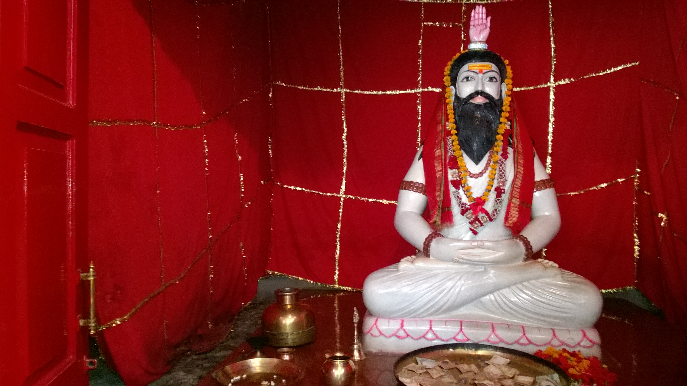
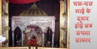
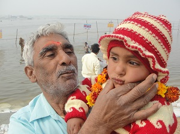

Divine Blessings of
Mata Thawe Wali
Nestled in the serene landscapes of Gopalganj, experience the spiritual aura of one of India's most sacred Shakti Peethas.
Scroll Down

Sacred Journey
The Legend of Rahshu Bhagat
Thawe Dham is not just a temple; it's a testament to the supreme devotion of Rahshu Bhagat. Legend says that Mata Durga appeared here from Kamakhya, traveling through Kolkata and Patna, to prove the devotion of her greatest follower.
- ✨ Ancient Divine Heritage
- 🙏 Spiritual Enlightenment
- 🌿 Peaceful Environment
Visual Tour
Divine Glimpses

